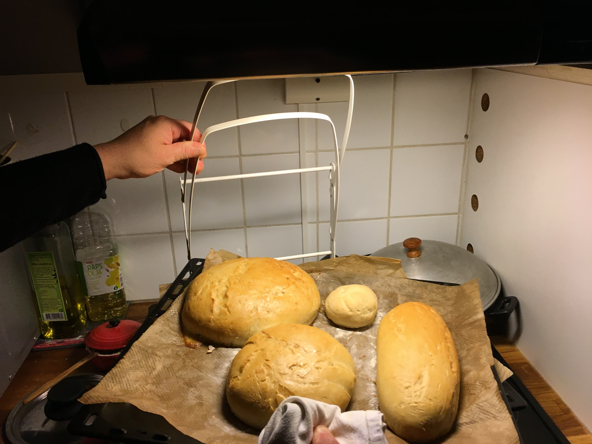

We are a couple who have planned to have a restaraunt for many years and now we have made it a reality. We were tired of visiting restaurants and being worried about the origin and quality of the food. So naturally, our goal at El Wueon is to provide our customers with fresh, homemade, original food.
Our food style is primarily originating from Chile, with touchs of our food experiences from different places around the world.
We are interested in health, and avoiding dairy products..but this does not mean we compromise on the food. We do not use oats or soy instead milks made of nuts, and our ingredients are of the natural, non-gmo and non-chemical kind. (Some of the dishes we serve include nuts, if you have a allergy please let us know before you eat with us.)